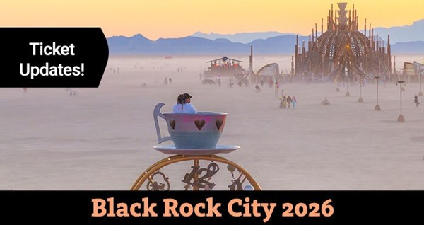

Hello Black Rock Citizen! Welcome. You are officially signed up to receive fresh updates on Black Rock City 2026 ticket sales. This is your first step in becoming part of a grand ephemeral city — one that honors who you are, not what you have. You will receive an email when registration opens for the next ticket sale, and at other key moments. In the meantime: 🔥 Buy tickets now via the Secure Ticket Exchange Program (STEP) 🔥 Visit the ticket information page to learn about ticket sales and programs 🔥 Subscribe to the Jackrabbit Speaks for fresh Burning Man & Black Rock City news Ignite your imagination, invite your friends, and start planning! 🔮 What do YOU want to create in Black Rock City 2026? We build Black Rock City together. Learn about volunteer teams you can join to help make the rocket go. We can’t wait to see you there! Burning Man ticketing